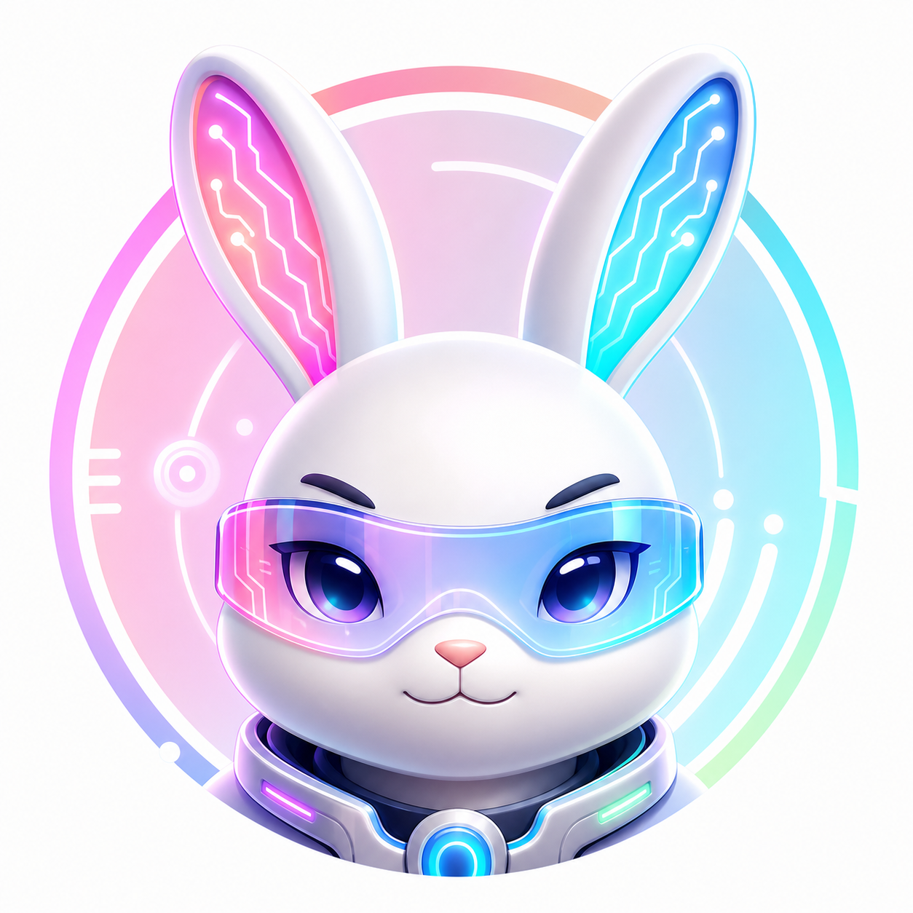
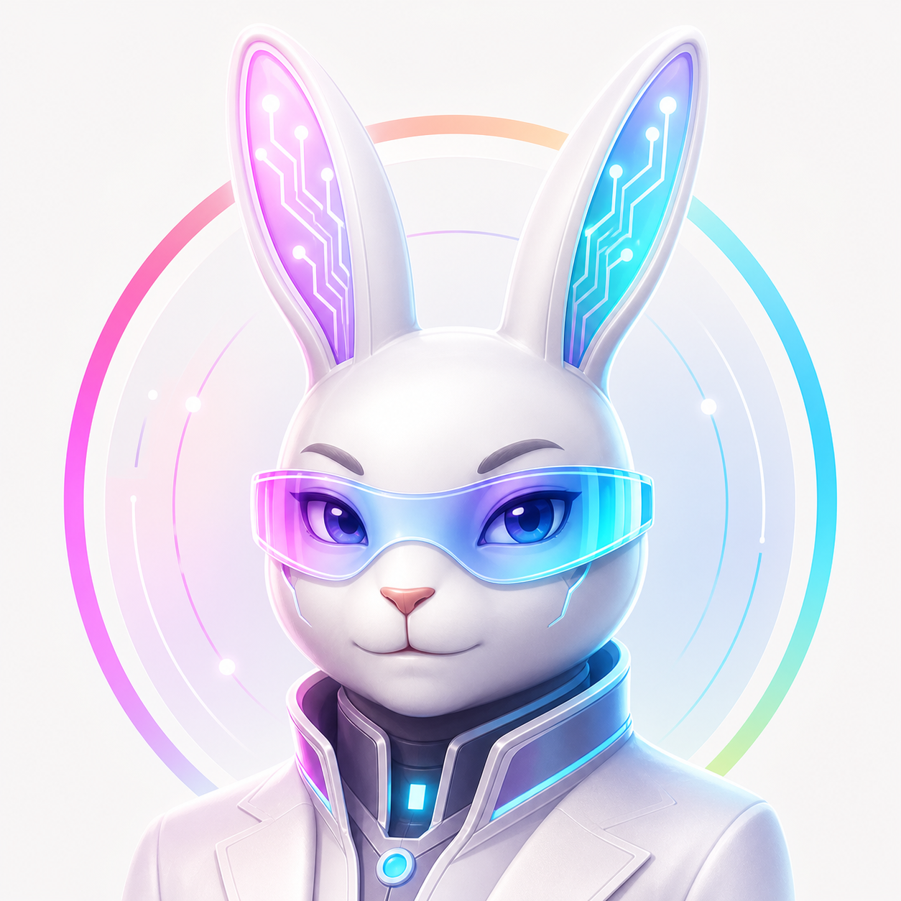
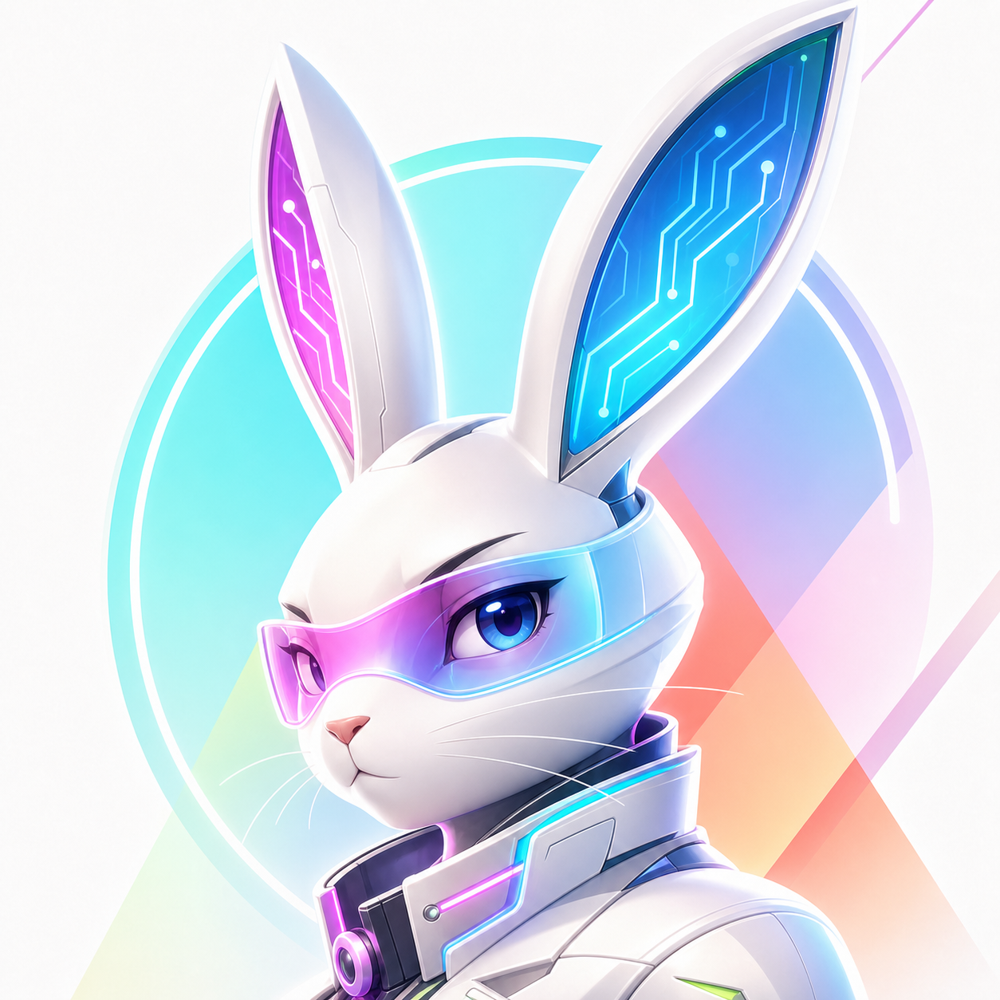
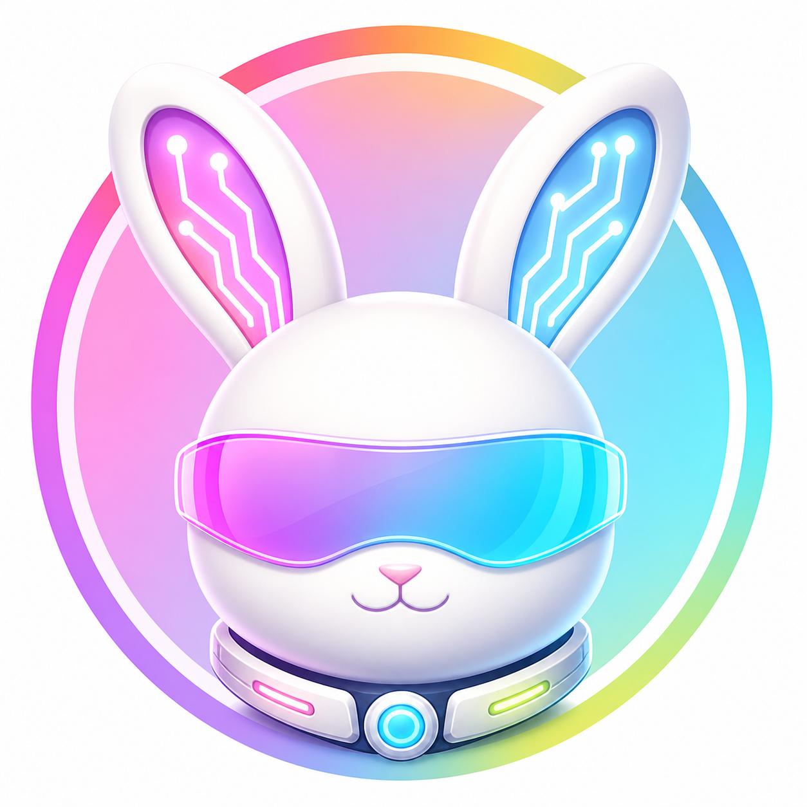
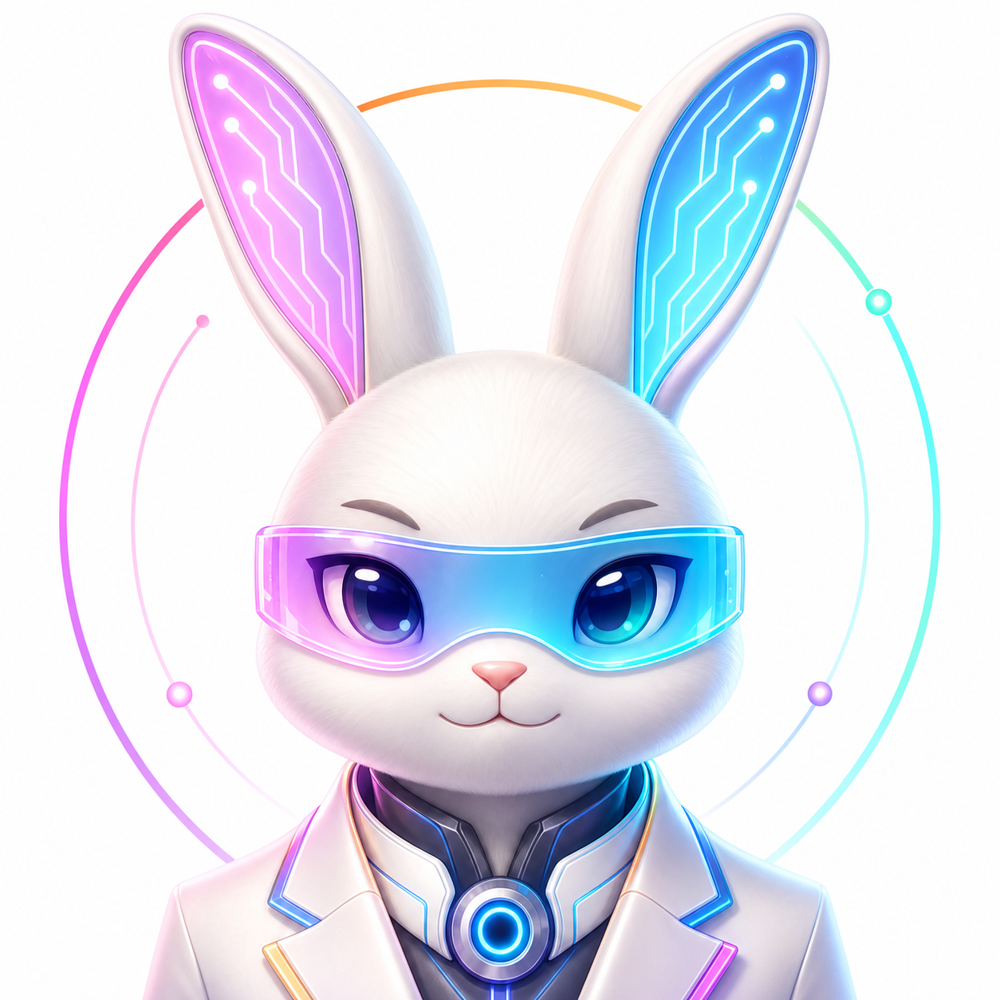
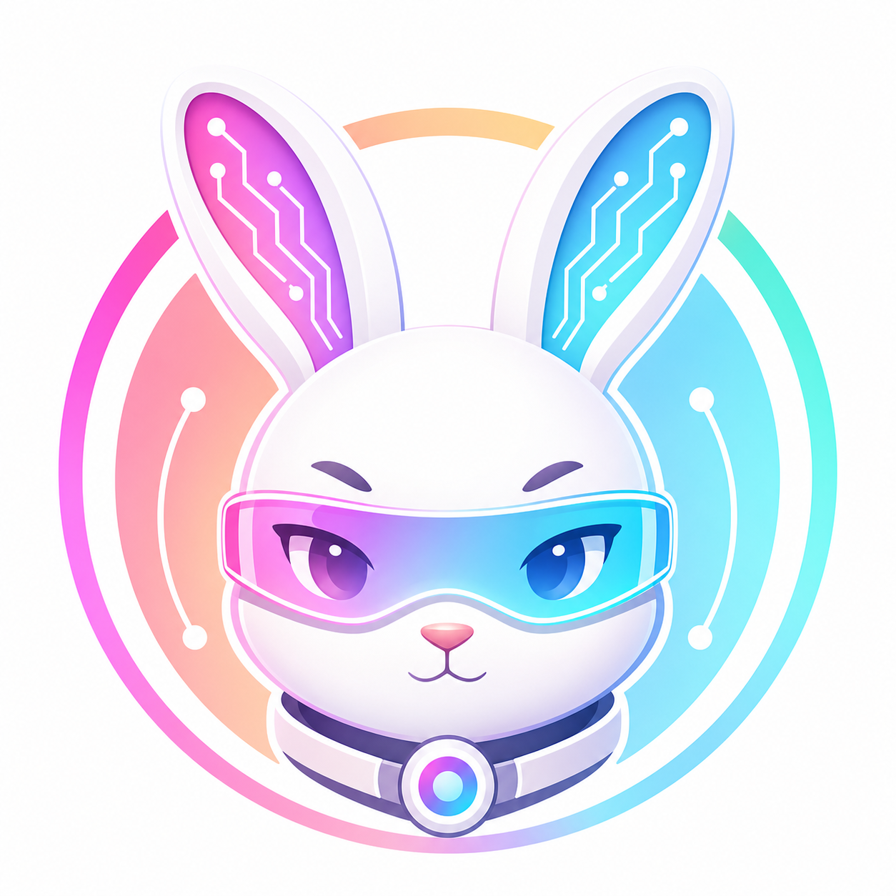
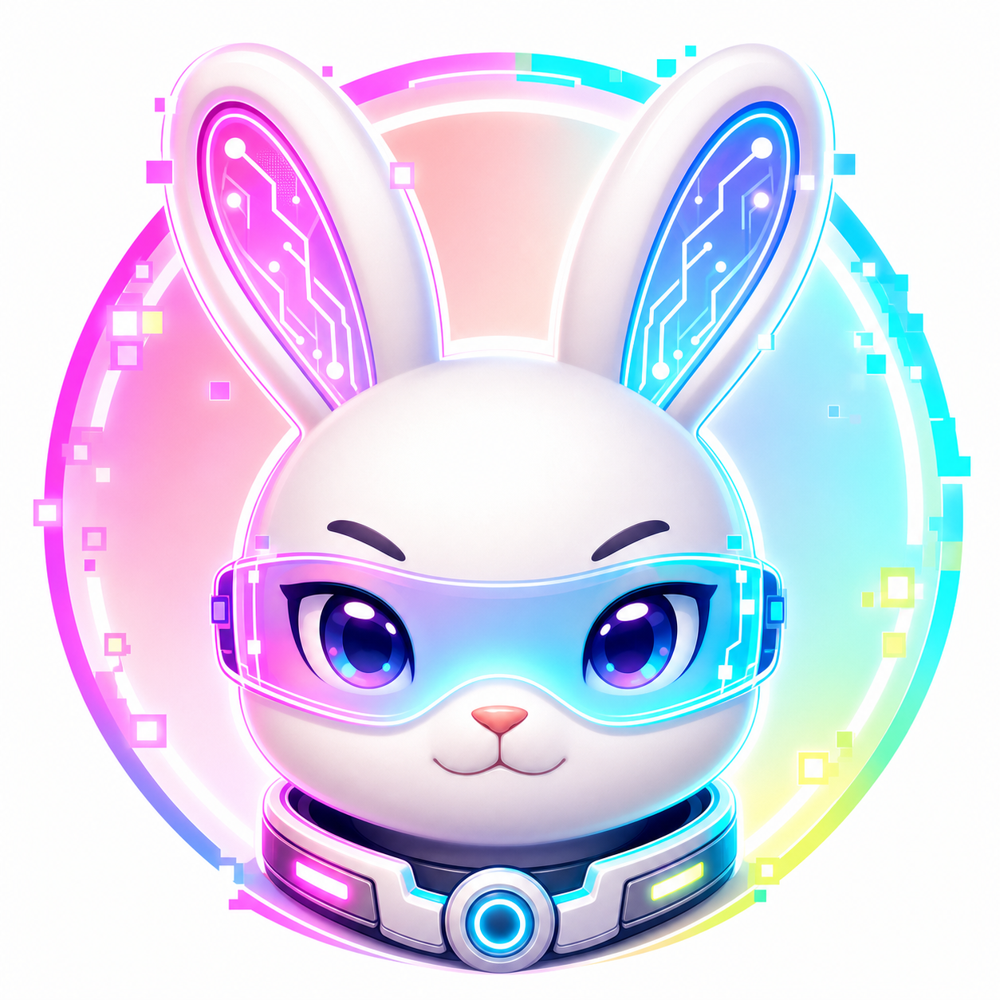
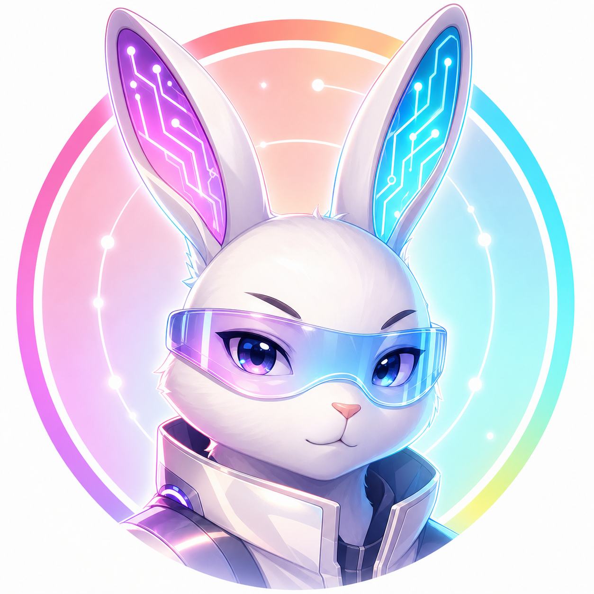
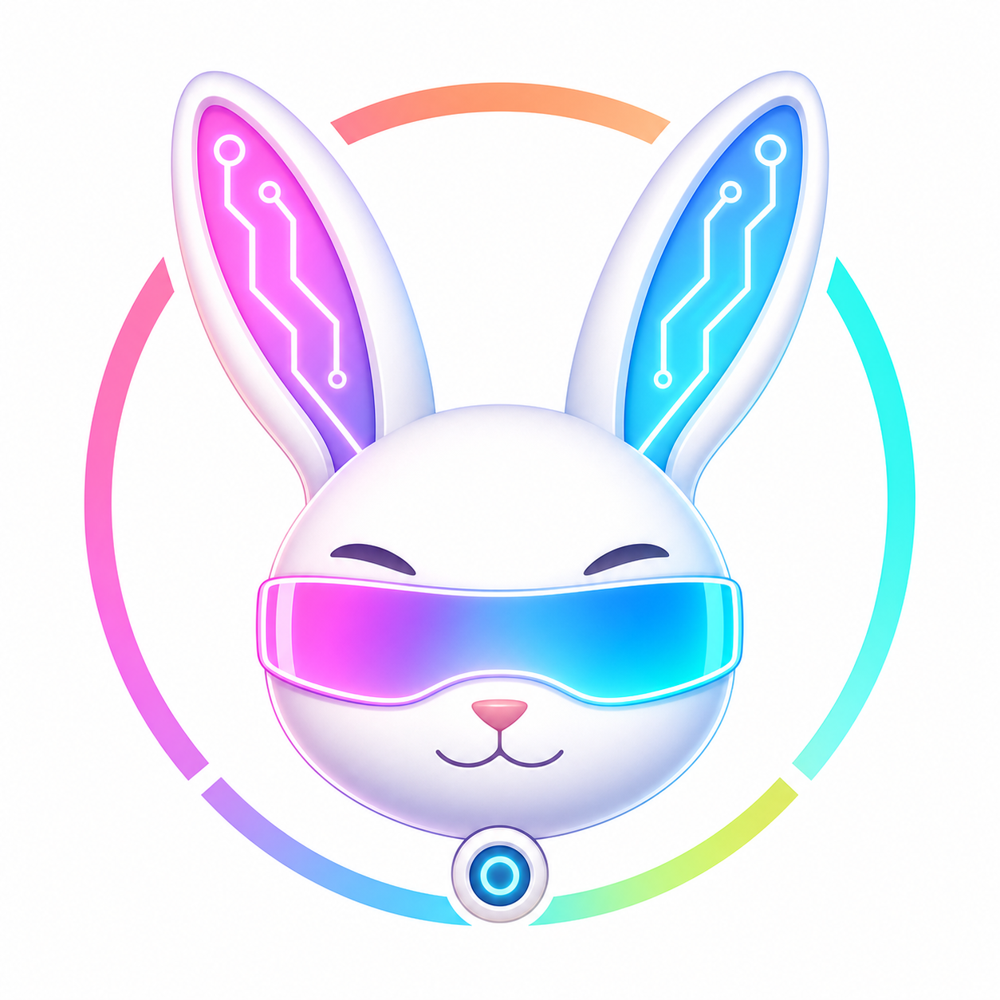
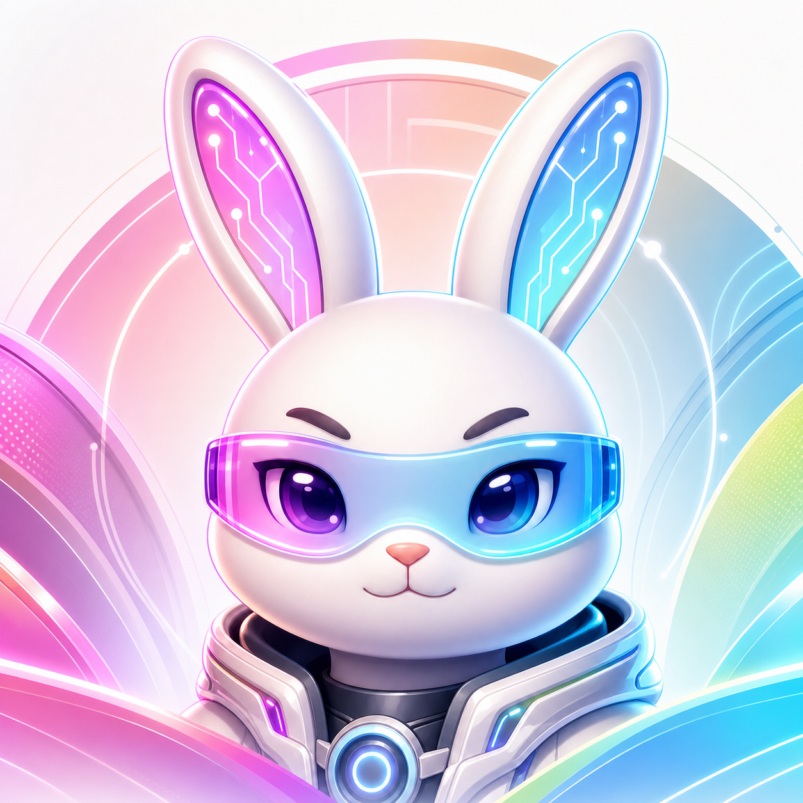

01

基准强化版
最接近上一张的方向：圆润、明亮、可爱但不过幼稚，护目镜和耳朵电路都是主视觉。
这一组沿着上一张最接近目标的圆润高端赛博兔方向继续扩展。重点比较轮廓、成熟度、护目镜、耳朵电路、头图延展性和品牌符号化程度。
建议反馈格式
直接回复编号即可，例如：选 02；喜欢 02 的成熟度，想结合 07 的霓虹像素感，脸型再接近 01，护目镜更简洁。

最接近上一张的方向：圆润、明亮、可爱但不过幼稚，护目镜和耳朵电路都是主视觉。

更强调成熟、可信和创始人气质，保留可爱轮廓，但弱化玩具感。

三分之四角度让形象更有姿态，整体更锋利、时尚，少一点传统头像感。

更像 App 图标或公众号头像，细节更少，缩小后更容易保持清晰。

把科技领口和核心节点做得更明确，强化个人品牌和创业精英感。

减少 3D 渲染厚度，更接近可沉淀成品牌系统的图形语言。

加入少量像素模块和更活跃的霓虹感，增强 AI 原生和互联网气质。

轻微二次元影响，眼神更有表达，但仍控制在专业和品牌化范围内。

把兔脸、护目镜和耳朵电路压缩成更强的图形符号，便于后续做正式 Logo。

保留大兔子主体，同时让背景更适合横向裁切到文章头图和网站首屏。